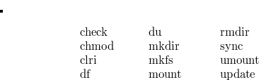

2 Fundamentals
UNIX runs on the larger models of the PDP11 series of computers manufactured by Digital Equipment Corporation. This chapter provides a brief summary of certain selected features of these computers with particular reference to the PDP11/40.
If the reader has not previously made the acquaintance of the PDP11 series then he is directed forthwith to the “PDP11 Processor Handbook”, published by DEC.
A PDP11 computer consists of a processor (also called a CPU connected to one or more memory storage units and peripheral controllers via a bidirectional parallel communication line called the “Unibus”.
2.1 The Processor
The processor, which is designed around a sixteen bit word length for instructions, data and program addresses, incorporates a number of high speed registers.
2.2 Processor Status Word
This sixteen bit register has subfields which are interpreted as follows:
|
bits |
description |
|
14,15 |
current mode (00 = kernel;) |
|
12,13 |
previous mode (11 = user;) |
|
5,6,7 |
processor priority (range 0..7) |
|
4 |
trap bit |
|
3 |
N, set if the previous |
|
result was negative |
|
|
2 |
Z, set if the previous |
|
result was zero |
|
|
1 |
V, set if the previous |
|
result gave an overflow |
|
|
0 |
C, set if the previous |
|
operation gave a carry |
The processor can operate in two different modes: kernel and user. Kernel mode is the more privileged of the two and is reserved by the operating system for its own use. The choice of mode determines:
The set of memory management segmentation registers which is used to translate program virtual addresses to physical addresses;
The actual register used as r6, the “stack pointer”;
Whether certain instructions such as “halt” will be obeyed.
2.3 General Registers
The processor incorporates a number of sixteen bit registers of which eight are accessible at any time as “general registers”. These are known as r0, r1, r2, r3, r4, r5, r6 and r7.
The first six of the general registers are available for use as accumulators, address pointers or index registers. The convention in UNIX for the use of these registers is as follows:
- r0, r1
are used as temporary accumulators during expression evaluation, to return results from a procedure, and in some cases to communicate actual parameters during a procedure call;
- r2, r3, r4
are used for local variables during procedure execution. Their values are almost always stored upon procedure entry, and restored upon procedure exit;
- r5
is used as the head pointer to a “dynamic chain” of procedure activation records stored in the current stack. It is referred to as the “environment pointer”.
The last two of the “general registers” do have a special significance and are to all intents, “special purpose”:
- r6
(also known as “sp”) is used as the stack pointer. The PDP11/40 processor incorporates two separate registers which may be used as “sp”, depending on whether the processor is in kernel or user mode. No other one of the general registers is duplicated in this way;
- r7
(also known as “pc”) is used as the program instruction address register.
2.4 Instruction Set
The PDP11 instruction set includes double, single and zero operand instructions. Instruction length is usually one word, with some instructions being extended to two or three words with additional addressing information.
With single operand instructions, the operand is usually called the “destination”; with double operand instructions, the two operands are called the “source” and “destination”. The various modes of addressing are described later.
The following instructions have been used in the file “m40.s” i.e. the file of assembly language support routines for use with the 11/40 processor. Note that N, Z, V and C are the condition codes i.e. bits in the processor status word (“ps”), and that these are set as side effects of many instructions besides just “bit”, “cmp” and “tst” (whose stated function is to set the condition codes).
- adc
Add the contents of the C bit to the destination;
- add
Add the source to the destination;
- ash
Shift the contents of the defined register left the number of times specified by the shift count. (A negative value implies a right shift.);
- ashc
Similar to “ash” except that two registers are involved;
- asl
Shift all bits one place to the left. Bit 0 becomes 0 and bit 15 is loaded into C;
- asr
Shift all bits one place to the right. Bit 15 is replicated and bit 0 is loaded into C;
- beq
Branch if eaual, i.e. if Z = l;
- bge
Branch if greater than or equal to, i.e. if
N = V;- bhi
Branch if higher, i.e if C = 0 and Z = 0;
- bhis
Branch if higher or the same, i.e. if C = 0;
- bic
Clear each bit to zero in the destination that corresponds to a non-zero bit in the source;
- bis
Perform an “inclusive or” of source and destination and store the result in the destination;
- bit
Perform a logical “and” of the source and destination to set the condition codes;
- ble
Branch if greater than or equal to, i.e if Z = 1 or N = V;
- blo
Branch if lower (than zero), if C = l;
- bne
Branch if not equal (to zero), i.e. if Z = 0;
- br
Branch to a location within the range (. -128,
. +127) where “.” is the current location;- clc
Clear C;
- clr
Clear destination to zero;
- cmp
Compare the source and destination to set the condition codes. N is set if the source value is less than the destination value;
- dec
Subtract one from the contents of the destination;
- div
The 32 bit two’s complement integer stored in rn and r(n+l) (where n is even) is divided by the source operand. The quotient is left in rn, and the remainder in r(n+l);
- inc
Add one to the contents of the destination;
- jmp
Jump to the destination;
- jsr
Jump to subroutine. Register values are shuffled as follows:
pc, rn, –(sp) = dest., pc, rn
- mfpi
Push onto the current stack the value of the designated word in the “previous” address space;
- mov
Copy the source value to the destination;
- mtpi
Pop the current stack and store the value in the designated word in the “previous” address space;
- mul
Multiply the contents of rn and the source. If n is even, the product is left in rn and r(n+l);
- reset
Set the INIT line on the Unibus for 10 milliseconds. This will have the effect of reinitialising all the device controllers;
- ror
Rotate all bits of the destination one place to the right. Bit 0 is loaded into C, and the previous value of C is loaded into bit 15;
- rts
Return from subroutine. Reload pc from rn, and reload rn from the stack;
- rtt
Return from interrupt or trap. Reload both pc and ps from the stack;
- sbc
Subtract the carry bit from the destination;
- sob
Subtract one from the designated register. If the result is not zero, branch back “offset” words;
- sub
Subtract the source from the destination;
- swab
Exchange the high and low order bytes in the destination;
- tst
Set the condition codes, N and Z, according to the contents of the destination;
- wait
Idle the processor and release the Unibus until a hardware interrupt occurs.
The “byte” version of the following instructions are used in the file “m40.s”, as well as the “word” versions described above:

clr \> mov \\ \> cmp \> tst \\ \end{tabbing}" style="width: &images/img-0003.png-width;&px;; height: &images/img-0003.png-height;&px;" class="tabbing gen" />2.5 Addressing Modes
Much of the novelty and complexity of the PDP11 instruction set lies in the variety of addressing modes which may be used for defining the source and destination operands.
The addressing modes which are used in “m40.s” are described below.
- Register Mode:
The operand resides in one of the general registers, e.g.
clr r0 mov rl,r0 add r4,r2In the following modes, the designated register contains an address value which is used to locate the operand.
- Register Deferred Mode:
The register contains the address of the operand, e.g.
inc (rl) asr (sp) add (r2),rl- Autoincrement Mode:
The register contains the address of the operand. As a side effect, the register is incremented after the operation, e.g.
clr (rl)+ mfpi (r0)+ mov (r1)+,r0 mov r2,(r0)+ cmp (sp)+,(sp)+- Autodecrement Mode:
The register is decremented and then operand, e.g.
inc -(r0) mov -(r1),r2 mov (r0)+,-(sp) clr -(sp)- Index Mode:
The register contains a value which is added to a sixteen bit word following the instruction to form the operand address, e.g.
clr 2(r0) movb 6(sp),(sp) movb _reloc(r0),r0 mov -10(r2),(rl)Depending on your viewpoint, in this mode the register is either an index register or a base register. The latter case actually predominates in “m40.s”. The third example above is actually one of the few uses of a register as an index register. (Note that “_reloc” is an acceptable variable name.)
There are two addressing modes whose use is limited to the following two examples:
jsr pc,(r0)+ jmp *0f(r0)The first example involves the use of the “autoincrement deferred” mode. (This occurs in the routine “call” on lines 0785, 0799.) The address of a routine intended for execution is to be found in the word addressed by r0, i.e. two levels of indirection are involved. The fact that r0 is incremented as a side effect is not relevant in this usage.
The second example (which occurs on lines 1055, 1066) is an instance of the “index deferred” mode. The destination of the “jump” is the content of the word whose address is labelled by “0f” plus the value of r0 (a small positive integer). This is a standard way to implement a multi-way switch.
The following two modes use the program counter as the designated register to achieve certain special effects.
- Immediate Mode:
This is the pc autoincrement mode. The operand is thus extracted from the program string, i.e. it becomes an immediate operand, e.g.
add $2,r0 add $2,(rl) bic $17,r0 mov $KISA0,r0 mov $77406,(rl)+- Relative Mode:
This is the pc index mode. The address relative to the current program counter value is extracted from the program string and added to the pc value to form the absolute address of the operand, e.g.
bic $340,PS bit $l,SSR0 inc SSR0 mov (sp),KISA6
It may be noted that each of the modes “index”, “index deferred”, “immediate” and “relative” extends the instruction size by one word.
The existence of the “autoincrement” and “autodecrement” modes, together with the special attributes of r6, make it conveniently possible to store many operands in a stack, or LIFO list, which grows downwards in memory. There are a number of advantages which flow from this: code string lengths are shorter and it is easier to write position independent code.
2.6 Unix Assembler
The UNIX assembler is a two pass assembler without macro facilities. A full description may be found in the “UNIX Assembler Reference Manual” which is contained in the “UNIX Documents”
The following brief notes should be of some assistance:
- (a)
a string of digits may define a constant number. This is assumed to be an octal number unless the string is terminated by a period (“.”), when it is interpreted as a decimal number.
- (b)
The character “/” is used to signify that the rest of the line is a comment;
- (c)
If two or more statements occur on the same line, they must be separated by semicolons;
- (d)
The character “.” is used to denote the current location;
- (e)
UNIX assembler uses the characters $ and “*” where the DEC assemblers use “#” and “@” respectively.
- (f)
An identifier consists of a set of alphanumeric characters (including the underscore). Only the first eight characters are significant and the first may not be numeric;
- (g)
Names which occur in “C” programs for variables which are to be known globally, are modified by the addition of a prefix consisting of a single underscore. Thus for example the variable “_regloc” which occurs on line 1025 in the assembly language file, “m40.s”, refers to the same variable as “regloc” at line 2677 of the file, “trap.c”;
- (h)
There are two kinds of statement labels: name labels and numeric labels. The latter consist of a single digit followed by a colon, and need not be unique. A reference to “nf” where “n” is a digit, refers to the first occurrence of the label “n:” found by searching forward.
A reference to “nb” is similar except that the search is conducted in the backwards direction;
- (i)
An assignment statement of the form
identifier = expressionassociates a value and type with the identifier. In the example
. = 60^.the operator ’
^’ delivers the value of the first operand and the type of the second operand (in this case, “location”);- (j)
The string quote symbols are “\({\lt}\)” and “\({\gt}\)”.
- (k)
Statements of the form
.globl x, y, zserve to make the names “x”, “y” and “z” external;
- (l)
The names “_edata” and “_end” are loader pseudo variables which the define the size of the data segment, and the data segment plus the bss segment respectively.
2.7 Memory Management
Programs running on the PDP11 may address directly up to 64K bytes (32K words) of storage. This is consistent with an address size of sixteen bits. Since it is economical and not unreasonable to do so the larger PDP11 models may be equipped with larger amounts of memory (up to 256K bytes for the PDP11/40) plus a mechanism for converting sixteen bit virtual (program) addresses into physical addresses of eighteen bits or more. The mechanism, which is known as the memory management unit, is simpler on the PDP11/40 than on the 11/45 or the 11/70.
On the PDP11/40 the memory management unit consists of two sets of registers for mapping virtual addresses to physical addresses. These are known as “active page registers” or “segmentation registers”. One set is used when the processor is in user mode and the other set, in kernel mode. Changing the contents of these registers changes the details of these mappings. The ability to make these changes is a privilege that the operating system keeps firmly to itself.
2.8 Segmentation Registers.
Each set of segmentation registers is composed of eight pairs, each consisting of a “page address register” (PAR) and a “description register” (PDR).
Each pair of registers controls the mapping of one page i.e. one eighth part of the virtual address space which 8K bytes (4K words).
Each page may be regarded as an aggregate of 128 blocks, each of 64 bytes (32 words). This latter size is the “grain size” for the memory mapping function, and as a practical consequence, it is also the “grain size” for memory allocation.
Any virtual address belongs to one page or other. The corresponding physical address is generated by adding the relative address within the page to the contents of the corresponding PAR to form an extended address (18 bits on the PDP11/40 and 11/45; 22 bits on the 11/70).
Thus each page address register acts as a relocation register for one page.
Each page can be divided on a 32 word boundary into two parts, an upper part and lower part. Each such part has a size which is a multiple of 32 words. In particular one part may be null, in which case the other part coincides with the whole page.
One of the two parts is deemed to contain valid virtual addresses. Addresses in the remaining part are declared invalid. Any attempt to reference an invalid address will be trapped by the hardware. The advantage of this scheme is that space in the physical memory need only be allocated for the valid r)art of a page.
2.9 Page Description Register
The page description register defines:
- (a)
the size of the lower part of the page. (The number stored is actually the number of 32 word blocks less one);
- (b)
a bit which is set when the upper part is the valid part. (Also known as the “expansion direction” bit);
- (c)
access mode bits defining “no access” or “read only access” or “read/write access”.
Note that if the valid part is null, this fact must be shown by setting the access bits to “no access”.
2.10 Memory Allocation
The hardware does not dictate the way areas in physical memory which correspond to the valid parts of pages should be allocated (except to the extent that they must begin and end on a 32 word boundary). These areas may be allocated in any order and may overlap to any extent.
In practice the allocation of areas of physical memory is much more disciplined as we shall see in Chapter Seven. Areas for pages which are related are most often allocated contiguously and in the order of their page numbers, so that all the segment areas associated with a single program are contained within one or at most two large areas of physical memory.
2.11 Memory Management Status Registers
In addition to the segmentation registers, on the PDP11/40 there are two memory management status registers:
- SR0
contains abort error flags and other essential information for the operating system. In particular memory management is enabled when bit 0 of SR0 is on;
- SR2
is loaded with the 16 bit virtual address at the beginning of each instruction fetch.
2.12 “i” and “d” Spaces
In the PDP11/45 and 11/70 systems, there are additional sets of segmentation registers. Addresses created using the pc register (r7) are said to belong to “i” space, and are translated by a different set of segmentation registers from those used for the remaining addresses which are said to belong to “d” space.
The advantage of this arrangement is that both “i” and “d” spaces may occupy up to 32K words, thus allowing the maximum space which can be allocated to a program to be increased to twice the space available on the PDP11/40.
2.13 Initial Conditions
When the system is first started after all the devices on the Unibus have been reinitialised, the memory management unit is disabled and the processor is in kernel mode.
Under these circumstances, virtual (byte) addresses in the range 0 to 56K are mapped into identically valued physical addresses. However the highest page of the virtual address space is mapped into the highest page of the physical address space, i.e. on the PDP11/40 or 11/45, addresses in the range
are mapped into the range
2.14 Special Device Registers
The high page of physical memory is reserved for various special registers associated with the processor and the peripheral devices. By sacrificing one page of memory space in this way, the PDP11 designers have been able to make the various device registers accessible without the need to provide special instruction types.
The method of assignment of addresses to registers in this page is a black art: the values are hallowed by tradition and are not to be questioned.